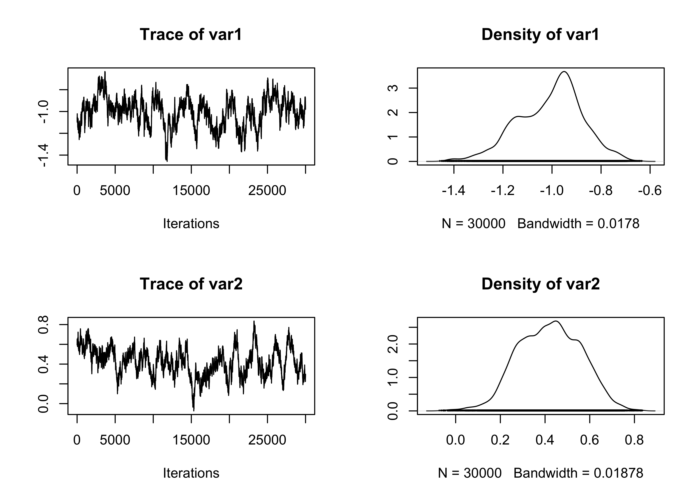

Computational Statistics II
Unit B.1: Optimal scaling & adaptive Metropolis
In this unit we discuss several (adaptive) MCMC strategies that have been presented in the slides of unit B.1. We will implement these proposals using the “famous” Pima indian dataset. The purpose of this unit is mainly presenting the implementation of the various MCMC algorithms and not making “inference” about their general performance. Refer to the nice paper by Chopin & Ridgway (2017) for a more comprehensive discussion on this aspect.
The Pima indian dataset
In first place, let us load the Pima.tr and Pima.te datasets which are available in the MASS R package. As described in the documentation, this dataset includes:
A population of women who were at least 21 years old, of Pima Indian heritage and living near Phoenix, Arizona, was tested for diabetes according to World Health Organization criteria. The data were collected by the US National Institute of Diabetes and Digestive and Kidney Diseases. We used the 532 complete records after dropping the (mainly missing) data on serum insulin.
See also the documentation of the Pima.tr and Pima.te datasets for a more comprehensive description of the involved variables. Firstly, we combine the training and test dataset into a single data.frame as follows:
We are interested in modeling the probability of being diabetic (variable type) as a function of the covariates. We also standardize the predictors, because this usually improves the mixing, see Gelman et al. ( 2008). As an exercise you can repeat the whole analysis using the original data.
Let \textbf{y} = (y_1,\dots,y_n)^\intercal be the vector of the observed binary responses (variable type) and let \textbf{X} be the corresponding design matrix whose generic row is \textbf{x}_i = (x_{i1},\dots,x_{ip})^\intercal, for i=1,\dots,n. We employ a generalized linear model such that
y_i \mid \pi_i \overset{\text{ind}}{\sim} \text{Bern}(\pi_i), \qquad \pi_i = g(\eta_i), \qquad \eta_i = \beta_1x_{i1} + \cdots + \beta_p x_{ip},
where the link function g(\cdot) is either the inverse logit transform (plogis function) or the cumulative distribution function of a standard normal (pnorm function). We wish to estimate the parameter vector {\bf \beta} = (\beta_1,\dots,\beta_p)^\intercal. To fix the ideas, we are interested in the Bayesian counterpart of the following models for binary data:
The focus of this presentation is on the computational aspects, so we will employ a relatively vague prior centered at 0, namely
\beta \sim N(0, 100 I_p).
The reader should be aware that much better prior specification exist; see for example Gelman et al. ( 2008).
We now turn to the implementation of some basic quantity. In first place, we code the log-likelihood and the log-posterior functions. We consider here the logistic case.
Metropolis-Hastings
The first algorithm we consider is a vanilla Metropolis-Hastings algorithm. Below we propose a relatively efficient implementation, which is very similar to the one employed in the Markdown of unit A.1, with the obvious modifications.
# R represent the number of samples
# burn_in is the number of discarded samples
# S is the covariance matrix of the multivariate Gaussian proposal
RMH <- function(R, burn_in, y, X, S) {
p <- ncol(X)
out <- matrix(0, R, p) # Initialize an empty matrix to store the values
beta <- rep(0, p) # Initial values
logp <- logpost(beta, y, X)
# Eigen-decomposition
eig <- eigen(S, symmetric = TRUE)
A1 <- t(eig$vectors) * sqrt(eig$values)
# Starting the Gibbs sampling
for (r in 1:(burn_in + R)) {
beta_new <- beta + c(matrix(rnorm(p), 1, p) %*% A1)
logp_new <- logpost(beta_new, y, X)
alpha <- min(1, exp(logp_new - logp))
if (runif(1) < alpha) {
logp <- logp_new
beta <- beta_new # Accept the value
}
# Store the values after the burn-in period
if (r > burn_in) {
out[r - burn_in, ] <- beta
}
}
out
}We sample R = 30000 values after a burn-in period of 30000 draws, for a total of 60000 iterations. The performance of the algorithm (effective sample size) are stored in the summary_tab object. In this unit we will consider 5 different MCMC algorithms, and we store their name as well.
library(coda)
R <- 30000 # Number of retained samples
burn_in <- 30000 # Burn-in period
# Summary table
summary_tab <- matrix(0, nrow = 5, ncol = 4)
colnames(summary_tab) <- c("Seconds", "Average ESS", "Average ESS per sec", "Average acceptance rate")
rownames(summary_tab) <- c("Vanilla MH", "Laplace MH", "Adaptive MH", "Metropolis within Gibbs", "Adaptive Metropolis within Gibbs")In order to run the algorithm, we need to specify the covariance matrix S of the proposal distribution. In the absence of some sensible suggestion, we initially try S = \text{diag}(10^{-3},\dots,10^{-3}). This could (and will) be an poor choice, leading to a highly autocorrelated chain. We will explore alternative specifications for S later on. The final result is decent, but the mixing can be certainly improved.
set.seed(123)
# Covariance matrix of the proposal
S <- diag(1e-3, ncol(X))
# Running the MCMC
start.time <- Sys.time()
fit_MCMC <- as.mcmc(RMH(R, burn_in, y, X, S)) # Convert the matrix into a "coda" object
end.time <- Sys.time()
time_in_sec <- as.numeric(end.time - start.time)
# Diagnostic
summary(effectiveSize(fit_MCMC)) # Effective sample size Min. 1st Qu. Median Mean 3rd Qu. Max.
174.9 205.0 258.5 259.6 320.7 333.1 Min. 1st Qu. Median Mean 3rd Qu. Max.
90.06 93.56 119.31 122.76 146.43 171.52 Min. 1st Qu. Median Mean 3rd Qu. Max.
0.7191 0.7191 0.7191 0.7191 0.7191 0.7191 # Summary statistics
summary_tab[1, ] <- c(
time_in_sec, mean(effectiveSize(fit_MCMC)),
mean(effectiveSize(fit_MCMC)) / time_in_sec,
1 - mean(rejectionRate(fit_MCMC))
)
# Traceplot of a couple of parameters
plot(fit_MCMC[, 3:4])Laplace approximation
As suggested, among many others, by Roberts and Rosenthal (2009), the asymptotically optimal covariance matrix S is equal to 2.38^2 \Sigma / p, where \Sigma is the unknown covariance matrix of the posterior distribution. In this second approach, we obtain a rough estimate of \Sigma using a quadratic approximation of the likelihood function. In the logistic case, this can be easily obtained with the vcov built-in R function.
set.seed(123)
# Running the MCMC
start.time <- Sys.time()
# Covariance matrix is selected via laplace approximation
fit_logit <- glm(type ~ X - 1, family = binomial(link = "logit"), data = Pima)
p <- ncol(X)
S <- 2.38^2 * vcov(fit_logit) / p
# MCMC
fit_MCMC <- as.mcmc(RMH(R, burn_in, y, X, S)) # Convert the matrix into a "coda" object
end.time <- Sys.time()
time_in_sec <- as.numeric(end.time - start.time)
# Diagnostic
summary(effectiveSize(fit_MCMC)) # Effective sample size Min. 1st Qu. Median Mean 3rd Qu. Max.
1097 1171 1203 1186 1211 1248 Min. 1st Qu. Median Mean 3rd Qu. Max.
24.05 24.78 24.95 25.34 25.62 27.34 Min. 1st Qu. Median Mean 3rd Qu. Max.
0.2726 0.2726 0.2726 0.2726 0.2726 0.2726 # Summary statistics
summary_tab[2, ] <- c(
time_in_sec, mean(effectiveSize(fit_MCMC)),
mean(effectiveSize(fit_MCMC)) / time_in_sec,
1 - mean(rejectionRate(fit_MCMC))
)
# Traceplot of the intercept
plot(fit_MCMC[, 1:2])Adaptive Metropolis-Hastings
We consider here a version of the Adaptive Metropolis (AM) algorithm of Haario, Saksman, and Tamminem (2001). The algorithm proceeds as in the standard Metropolis algorithm, but the covariance matrix of the proposal is updated at each iteration.
We use the following (adaptive) proposal distribution:
q_r({\bf \beta}^* \mid {\bf \beta}) \sim N({\bf \beta}, \:2.38^2 / p \: \Sigma_r + \epsilon I_p),
where \Sigma_r is the covariance matrix of the previously r sampled values \beta^{(1)},\dots,\beta^{(r)} and \epsilon > 0 is some small value that avoid degeneracies (i.e. the matrix \Sigma_r must be invertible). Here, we will use \epsilon = 10^{-6}. Moreover, note that the following recursive formula holds true: \Sigma_r = \frac{1}{r - 1}\sum_{j=1}^r(\beta^{(j)} - \bar{\beta}^{(r)})(\beta^{(j)} - \bar{\beta}^{(r)})^\intercal = \frac{r - 2}{r - 1}\Sigma_{r-1} + \frac{1}{r}(\beta^{(r)} - \bar{\beta}^{(r-1)})(\beta^{(r)} - \bar{\beta}^{(r-1)})^\intercal.
where \bar{\beta}^{(r)} = (r - 1)/r \bar{\beta}^{(r-1)} + \beta^{(r)} / r is the arithmetic means of the first r sampled values. This facilitates the computation of \Sigma_r. The code for this AM algorithm is given in the following chunk.
# R represent the number of samples
# burn_in is the number of discarded samples
# S is the covariance matrix of the multivariate Gaussian proposal
RMH_Adaptive <- function(R, burn_in, y, X) {
p <- ncol(X)
out <- matrix(0, R, p) # Initialize an empty matrix to store the values
beta <- rep(0, p) # Initial values
logp <- logpost(beta, y, X)
epsilon <- 1e-6 # Inital value for the covariance matrix
# Initial matrix S
S <- diag(epsilon, p)
Sigma_r <- diag(0, p)
mu_r <- beta
for (r in 1:(burn_in + R)) {
# Updating the covariance matrix
if(r > 1){
Sigma_r <- (r - 2) / (r - 1) * Sigma_r + tcrossprod(beta - mu_r) / r
mu_r <- (r - 1) / r * mu_r + beta / r
S <- 2.38^2 * Sigma_r / p + diag(epsilon, p)
}
# Eigen-decomposition
eig <- eigen(S, symmetric = TRUE)
A1 <- t(eig$vectors) * sqrt(eig$values)
beta_new <- beta + c(matrix(rnorm(p), 1, p) %*% A1)
logp_new <- logpost(beta_new, y, X)
alpha <- min(1, exp(logp_new - logp))
if (runif(1) < alpha) {
logp <- logp_new
beta <- beta_new # Accept the value
}
# Store the values after the burn-in period
if (r > burn_in) {
out[r - burn_in, ] <- beta
}
}
out
}set.seed(123)
# Running the MCMC
start.time <- Sys.time()
fit_MCMC <- as.mcmc(RMH_Adaptive(R = R, burn_in = burn_in, y, X))
end.time <- Sys.time()
time_in_sec <- as.numeric(end.time - start.time)
# Diagnostic
summary(effectiveSize(fit_MCMC)) # Effective sample size Min. 1st Qu. Median Mean 3rd Qu. Max.
940.1 984.0 1137.8 1129.6 1202.1 1361.1 Min. 1st Qu. Median Mean 3rd Qu. Max.
22.04 25.06 26.37 27.01 30.49 31.91 Min. 1st Qu. Median Mean 3rd Qu. Max.
0.2086 0.2086 0.2086 0.2086 0.2086 0.2086 # Summary statistics
summary_tab[3, ] <- c(
time_in_sec, mean(effectiveSize(fit_MCMC)),
mean(effectiveSize(fit_MCMC)) / time_in_sec,
1 - mean(rejectionRate(fit_MCMC))
)
# Traceplot of the intercept
plot(fit_MCMC[, 1:2])Metropolis within Gibbs
We now consider a Metropolis within Gibbs strategy. The object se include the standard errors of the proposals for each parameter. The default choice
RMH_Gibbs <- function(R, burn_in, y, X, se) {
p <- ncol(X)
out <- matrix(0, R, p) # Initialize an empty matrix to store the values
beta <- beta_new <- rep(0, p) # Initial values
logp <- logpost(beta, y, X)
for (r in 1:(burn_in + R)) {
for (j in 1:p) {
beta_new[j] <- beta[j] + rnorm(1, 0, se[j])
logp_new <- logpost(beta_new, y, X)
alpha <- min(1, exp(logp_new - logp))
if (runif(1) < alpha) {
logp <- logp_new
beta[j] <- beta_new[j] # Accept the value
}
}
# Store the values after the burn-in period
if (r > burn_in) {
out[r - burn_in, ] <- beta
}
}
out
}p <- ncol(X)
se <- sqrt(rep(1e-4, p))
set.seed(123)
# Running the MCMC
start.time <- Sys.time()
fit_MCMC <- as.mcmc(RMH_Gibbs(R = R, burn_in = burn_in, y, X, se)) # Convert the matrix into a "coda" object
end.time <- Sys.time()
time_in_sec <- as.numeric(end.time - start.time)
# Diagnostic
summary(effectiveSize(fit_MCMC)) # Effective sample size Min. 1st Qu. Median Mean 3rd Qu. Max.
27.02 36.43 37.37 37.57 40.58 44.21 Min. 1st Qu. Median Mean 3rd Qu. Max.
678.6 740.1 802.8 814.8 824.1 1110.1 Min. 1st Qu. Median Mean 3rd Qu. Max.
0.9682 0.9685 0.9697 0.9698 0.9710 0.9719 # Summary statistics
summary_tab[4, ] <- c(
time_in_sec, mean(effectiveSize(fit_MCMC)),
mean(effectiveSize(fit_MCMC)) / time_in_sec,
1 - mean(rejectionRate(fit_MCMC))
)
# Traceplot of the intercept
plot(fit_MCMC[, 1:2])
Adaptive Metropolis within Gibbs
Finally, we consider here the Adaptive Metropolis within Gibbs algorithm of Roberts and Rosenthal (2009). The algorithm proceeds as in the standard Metropolis within Gibbs algorithm, but the standard errors of the proposal are updated at each iteration.
Every 50 iterations, the algorithm increases or decreases the standard errors se according to the acceptance rate. As a rule of thumb, the “optimal” acceptance rate is about 0.44 in the Metropolis within Gibbs case.
RMH_Gibbs_Adaptive <- function(R, burn_in, y, X, target = 0.44) {
p <- ncol(X)
out <- matrix(0, R, p) # Initialize an empty matrix to store the values
beta <- beta_new <- rep(0, p) # Initial values
logp <- logpost(beta, y, X)
epsilon <- rep(0, p) # Initial value
accepted <- numeric(p) # Vector of accepted values
batch <- 1
for (r in 1:(burn_in + R)) {
# Do we need to update the parameters?
if (batch == 50) {
for (j in 1:p) {
# Adapting the standard errors
if ((accepted[j] / 50) > target) {
epsilon[j] <- epsilon[j] + min(0.01, sqrt(1 / r))
} else {
epsilon[j] <- epsilon[j] - min(0.01, sqrt(1 / r))
}
}
# Restart the cycle - Erase everything
accepted <- numeric(p) # Vector of accepted values
batch <- 0
}
# Increment the batch
batch <- batch + 1
for (j in 1:p) {
beta_new[j] <- beta[j] + rnorm(1, 0, exp(epsilon[j]))
logp_new <- logpost(beta_new, y, X)
alpha <- min(1, exp(logp_new - logp))
if (runif(1) < alpha) {
logp <- logp_new
beta[j] <- beta_new[j] # Accept the value
accepted[j] <- accepted[j] + 1
}
}
# Store the values after the burn-in period
if (r > burn_in) {
out[r - burn_in, ] <- beta
}
}
out
}set.seed(123)
# Running the MCMC
start.time <- Sys.time()
fit_MCMC <- as.mcmc(RMH_Gibbs_Adaptive(R = R, burn_in = burn_in, y, X)) # Convert the matrix into a "coda" object
end.time <- Sys.time()
# Diagnostic
summary(effectiveSize(fit_MCMC)) # Effective sample size Min. 1st Qu. Median Mean 3rd Qu. Max.
653.2 733.1 1021.5 1009.3 1293.6 1373.3 Min. 1st Qu. Median Mean 3rd Qu. Max.
21.84 23.19 31.43 32.76 41.07 45.93 Min. 1st Qu. Median Mean 3rd Qu. Max.
0.4451 0.4472 0.4479 0.4483 0.4494 0.4517 # Summary statistics
summary_tab[5, ] <- c(
time_in_sec, mean(effectiveSize(fit_MCMC)),
mean(effectiveSize(fit_MCMC)) / time_in_sec,
1 - mean(rejectionRate(fit_MCMC))
)
# Traceplot of the intercept
plot(fit_MCMC[, 1:2])Summary statistics
The summary statistics of all the above algorithm are reported in the table below.
| Seconds | Average ESS | Average ESS per sec | Average acceptance rate | |
|---|---|---|---|---|
| Vanilla MH | 0.96 | 259.58 | 269.41 | 0.72 |
| Laplace MH | 0.98 | 1185.77 | 1214.64 | 0.27 |
| Adaptive MH | 2.13 | 1129.64 | 530.07 | 0.21 |
| Metropolis within Gibbs | 6.58 | 37.57 | 5.71 | 0.97 |
| Adaptive Metropolis within Gibbs | 6.58 | 1009.32 | 153.28 | 0.45 |